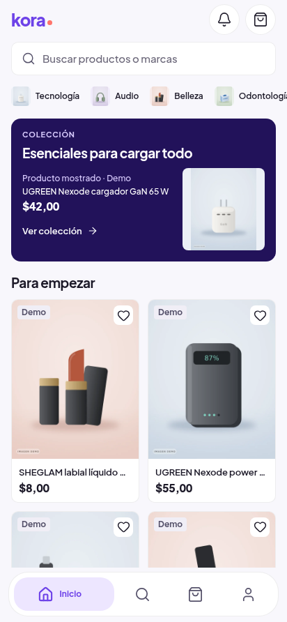
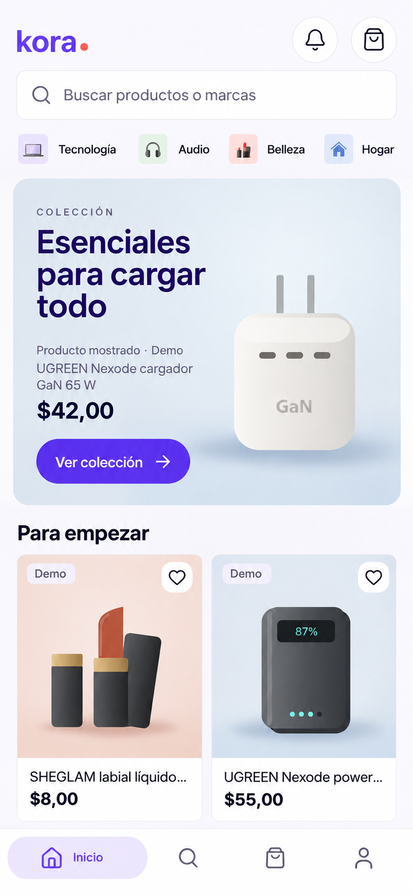
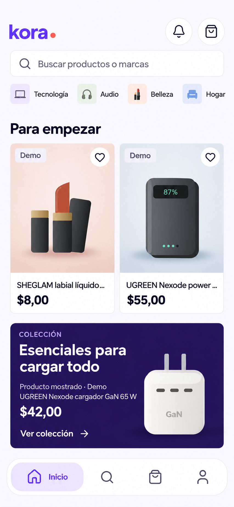

Inicio V2: comparación de arquitectura editorial
La primera imagen es una captura web real de la versión publicada. A/B/C son conceptos generados, no implementados. Se muestran completos, sin retocar, a igual ancho; las imágenes del catálogo son ilustraciones Demo. No atribuirles pruebas Android o resultados de conversión.
Decisiones, limitaciones y revisión del equipo · Recepción Android real
Publicada · 1A+2A

Captura real web 412×892. Primera tarjeta y=429; dos completas. OTA Android 01a131f4.
A · Editorial inmersiva

Concepto generado, no implementado; ilustraciones Demo reinterpretadas. Prioriza imagen. Coste: comparación más tarde. Barra vigente restaurada tras revisión.
B · Marketplace modular

Concepto generado, no implementado; ilustraciones Demo reinterpretadas. Prioriza decidir. La colección se conserva como siguiente ruta editorial. Candidato recomendado: conservar segunda fila tras colección, sin perder cuatro SKU.
C · Electric Violet editorial
 Concepto generado, no implementado; ilustraciones Demo reinterpretadas. Prioriza identidad. Leyenda comercial corregida; coste pendiente: apertura superior todavía alta.
Concepto generado, no implementado; ilustraciones Demo reinterpretadas. Prioriza identidad. Leyenda comercial corregida; coste pendiente: apertura superior todavía alta.
Comparación del primer viewport
En A/B/C la altura se estima visualmente, normalizando por el ancho 412. No son medidas DOM ni presupuestos implementados. Las tres salidas finales 853×1844 conservan aproximadamente la proporción pedida; no se ha deformado para fingir píxeles exactos.
Auditor final: A y B aprobados como conceptos; C mantiene cambios obligatorios por altura y no está recomendada. Ningún concepto autoriza otra publicación. Oliver debe revisar y elegir antes del siguiente incremento.